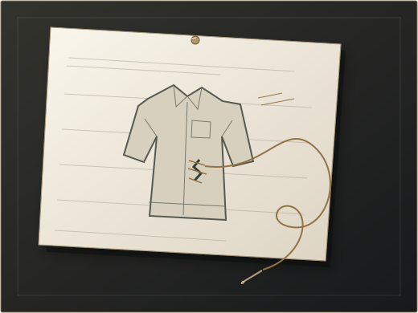

Still on
the bench.
A fictional mending question. Two attempts. The part that needs your eyes.
Come closer to the work
YOUR BRIEF / CARRIED FROM THIS TAB
Your words, carried here.
These are your words. The fictional mending study below does not respond to your brief.
Open your original answers
Your edited brief
EXAMPLE / THE QUESTION WE’RE WORKING ON
How do you begin a repair note?
A favourite jacket has a tear. A bag has a loose seam. You can see what needs attention, but you may not know what to call it. Where should a mending notebook begin?
01 / ON THE BENCH
Two possible beginnings.
Begin with the object, or the part that needs attention.
You don’t have to know why yet.
What we left aside
A catalogue of repair techniques.
In this fictional study, we set aside a catalogue of stitches and repair techniques as the first screen. It expected someone to name a solution before they had recorded the worn part.
The route stays here with its reason. We could revisit it if people arrive knowing which repair they want to try.
02 / YOUR LOCAL MARGIN
A doubt worth keeping.
Local draft / not shared
No observation pinned yet.
Your observation and draft choice can be downloaded together. If this browser permits tab storage, recorded drafts survive a reload in this tab.
Clearing here removes your carried brief and this visit’s draft. Return-visit notes stay in their own room.
WHAT RESISTED / STILL A QUESTION
The eye knows before the words do.
The working doubt: a person may recognise wear without knowing whether it is a tear, a loose seam or something else. A neat list of terms can make a small repair feel harder to begin.
This is a hypothesis in an example study, not an observed client result.
03 / YOUR NEXT DECISION
Which beginning should we test?
Object first keeps each note beside the thing it belongs to. Damage first begins with what caught the eye, but asks someone to name the problem.
We have no usability result yet. Choosing an approach here only prepares a local draft for a possible test.
No draft choice recorded.
What would change our minds?
Ask someone with a worn jacket and someone with a fraying bag to try both beginnings. Watch what they can name and what they would rather show. Revise the approach using that evidence.